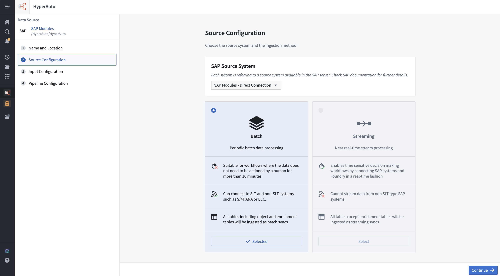
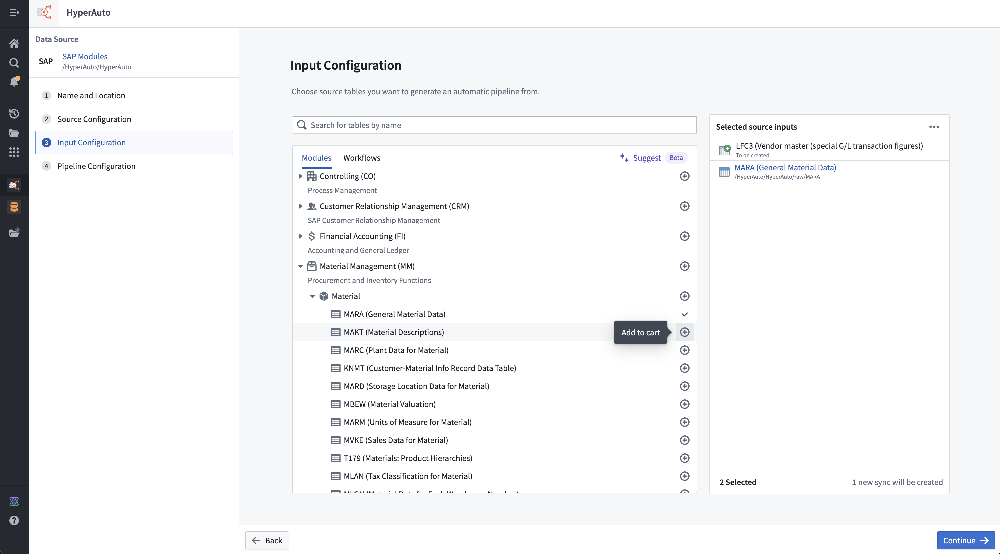
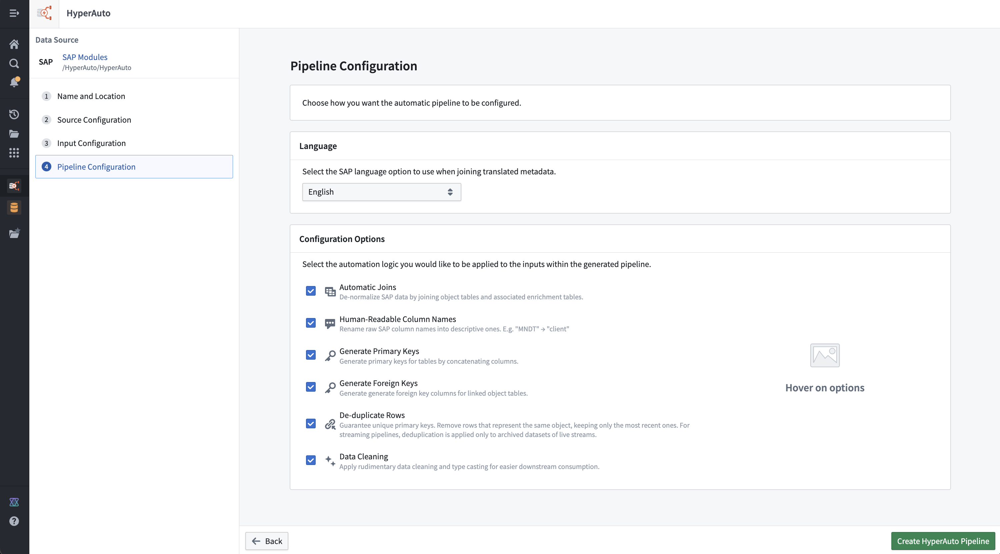

This page describes configuration options for HyperAuto V2. The following steps comprise the HyperAuto V2 configuration process:
:::callout{theme="neutral"} For HyperAuto V1 Configuration Reference, refer to the legacy documentation. :::
The first step in the HyperAuto V2 configuration wizard is to specify the name of the new pipeline and the desired folder location within the Foundry file system. The HyperAuto pipeline resource and associated output datasets will be created within this folder.
The HyperAuto V2 source configuration page helps you choose the source system and the ingestion method.

This selection is available for sources that have sub-systems users must choose between (for example "contexts" within SAP). A sub-system is defined as a configuration within a source that results in its own set of available tables and metadata. As a result, switching between sub-systems will completely change other available configurations, such as the supported pipeline mode (batch vs. streaming) and the tables and existing syncs available for selection on the Input configuration page.
There are three main architectural patterns for connecting Foundry to an SAP system:
HyperAuto supports two modes of sync and data transformation. You can choose from streaming or batch mode on the initial HyperAuto pipeline setup on the Source configuration page.
:::callout{theme="warning"} Streaming requires always-on computation to process data in real-time and therefore will likely increase load on the source system and within Foundry. :::
The Input configuration page is where a user chooses the specific inputs to be processed by a particular HyperAuto pipeline.

For ease of use, the input selection UI supports several methods of browsing and discovering the source tables that are relevant. For SAP, the methods are:
Sync creation is also available from the Input configuration page, allowing users to create a new sync for any input that does not already have one. This allows a user to start from a fresh source to a fully configured HyperAuto pipeline in just a few clicks, without needing to work out how each sync should be configured.
:::callout{theme="neutral" title="Beta"} Sync creation is in the beta phase of development and may not be available on your enrollment. Functionality may change during active development. Contact Palantir Support to request access to sync creation. :::
Your Foundry enrollment may have AIP features enabled on the Suggest tab; more information can be found in the AIP documentation.
The pipeline configuration page enables you to set up a pipeline that meets your needs, with options including:

For sources that contain tables with data in multiple languages, HyperAuto provides a language filtering step to avoid populating multiple rows per possible language in the outputs. The language selected here will be applied as a filter against the relevant tables, before additional transformations are applied (such as joins to other tables).
You can decide how much processing a user wants automatically applied across all of their source inputs from pipeline configuration options. All configuration options are enabled by default, but can be disabled as required (for example, to balance between functionality and pipeline performance).
HyperAuto receives table classifications via the source's metadata, splitting them into either object or enrichment tables. In this definition, enrichment tables are those that are not intrinsically valuable on their own but instead act as extensions or lookup tables to associated object tables (for example, a text description table).
In this way, HyperAuto is able to query the object <-> enrichment table relationships from the source and produce corresponding left-joins from the enrichment tables onto the object tables. This results in a rich, comprehensive de-normalized dataset for each object without the need of joining against other tables to enable an extensive review.
This is particularly useful in building a Foundry Ontology where the standard approach is the use of a semantically-oriented, de-normalized data model.
In the case of SAP, "TEXT" tables are classified as Enrichment tables within HyperAuto's processing. For example, MAKT (material descriptions) could be joined onto MARA (general material data).
Tables classified as Enrichment will be consumed as batch inputs rather than streams. This allows the pipeline to create "lookup" left-joins onto the core streams from these tables, enhancing the stream data without trying to join together two live streams at once.
Existing syncs for Enrichment tables in streaming mode will only be offered when configuring the relevant input if the schema is compliant with Foundry streaming and the underlying Avro file format that is used.
:::callout{theme="neutral"}
Tip: For SAP syncs, the config option cleanFieldNamesForAvro set to true ensures the schema is Avro (Streaming) compliant. HyperAuto created syncs will enable this option by default.
:::

HyperAuto can use the column metadata provided by the source to rename the source-defined column names into names that are self-explanatory and easy to use by users unfamiliar with the source's schema.
This occurs by concatenating the column's human-readable name onto the original column name in the form Human readable_|_original, providing access to both forms when interacting with the data for maximum usability.
When enabled, HyperAuto generates descriptive names for newly created output datasets based on the source table metadata. This makes it easier to identify and navigate pipeline outputs without needing to reference the original source table names. Existing output datasets are not renamed when this option is toggled on for an existing pipeline.

If sources do not have single-column primary keys, HyperAuto can dynamically generate primary keys. The source's metadata contains information stating which columns in the table together comprise a primary key, which HyperAuto uses to build concatenation logic to create a primary_key column.
The values are concatenated with a _|_ separator.
Having a single column for a primary key is necessary to use the output as a backing dataset for an Ontology object.

HyperAuto also has access to object-to-object relationships as defined in the source's data model metadata. Using the metadata, logic can be created in the pipeline to generate a foreign-key column per relationship (by concatenating the relevant columns, similar to the Primary key logic, which can be used to join against or build Ontology links from.
The foreign keys are named in the form column1_column2_|_foreign_key_tableA, such that:
column1 and column2 together with the separator _|_, andtableA via its primary_key.Foreign keys are necessary to produce Ontology relationships between objects.
Foreign keys are not created for object-to-enrichment table relationships when the automatic joins configuration option is enabled.

HyperAuto provides logic to automatically deduplicate tables that contain duplicate rows. This can be useful in cases such as change data capture (CDC) systems that append new rows each time a change occurs. HyperAuto will deduplicate, selecting the latest up-to-date row for each primary key.
Deduplication is handled differently in streaming mode. Two streaming outputs will be created. The main output will now resolve into a deduplicated dataset when read by a batch or incremental pipeline. The changelog output will provide a non-deduplicated dataset when read by a batch or incremental pipeline if required. Both outputs can be consumed by another stream as normal.
If columns that comprise the primary key of the table are not one of the below types they will be cast to string to ensure deduplication can work:

The data cleaning configuration option removes common data cleanliness issues from all tables. More information on the types of issues addressed can be found below.
"" strings are converted to null (standard practice for data in Foundry).DECIMAL data types are cast to be DOUBLE, which has benefits across the platform (including enabling support for Ontology properties).:::callout{theme="warning" title="Experimental"} Incremental processing for HyperAuto pipelines is in the experimental phase of development and may not be available for use on your enrollment. Functionality may change during active development. :::
For batch SAP pipelines, you can enable incremental processing. When enabled, the pipeline only processes new data that has been appended to the input datasets since the last build, rather than reprocessing all inputs on every run. This can reduce compute resource usage and build times for pipelines with large, frequently updating input datasets.
Incremental processing is only available for batch pipelines with direct SAP connections. For more information on incremental computation, refer to computation modes for batch input datasets.
:::callout{theme="neutral" title="Beta"} Batch compute settings for HyperAuto pipelines are in the beta phase of development. Functionality may change during active development. :::
For batch pipelines, you can select a compute backend in the Batch Compute Settings section of the Pipeline Configuration page. This setting determines the compute method used to process your pipeline.
The following compute backend options are available:
You can select the faster backend when creating a new HyperAuto pipeline, or switch the backend of an existing pipeline by editing the pipeline configuration.